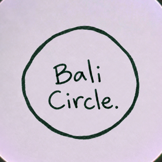

Bali Circle
Find your crew in Bali.
A private social club for people who surf, train, run and stretch. Every day, 15 people nearby who share your sports. Say hi, go do something.
Download on the App StoreFree · iPhone
- Nearby, not everywhere.Rounded distance only. Nobody ever sees your exact location.
- 15 a day.Picked by distance, sports and who just arrived. No endless feed, no swiping.
- Not a dating app.You can be open to dates if you want. Most people are looking for a surf or gym buddy.
Now in Canggu